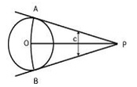
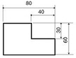
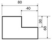
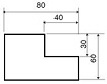
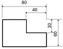
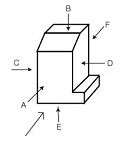
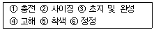

컴퓨터그래픽스운용기능사 (2007-04-01 기출문제)
1과목: 산업디자인 일반
1. 다음중인간과도구의 상호작용이중요한 연구대상인 디자인 분야는?
- 스페이스 디자인
- 커뮤니케이션 디자인
- 프로덕트 디자인
- 인테리어 디자인
(정답률: 59%)

2. 선에 대한설명 중 옳은 것은?
- 기하학에서는 무수히 많은 점들의 집합을 선이라 한다.
- 선은 명암의 차이, 면과 면의 교차에서만 느낄 수 있다.
- 수평선은 동적이고 곡선은 불안정하다.
- 사선은 안정되고, 운동감이 있다.
(정답률: 79%)
3. 마켓쉐어(market share) 란?
- 잠재시장의 수요
- 지방시장의 잠재량
- 회사의 시장 점유율
- 시장의 지역적분포도
(정답률: 70%)
4. 다음 중 시각적 안정감과 명쾌감을 유발시키는 구성 원리인 균형에 속하지 않은 것은?
- 비대칭
- 바닥
- 천장
- 기둥
(정답률: 43%)
5. 실내디자인의 기본요소중 인간의 접촉빈도가 가장 높은 것은?
- 벽
- 바닥
- 천장
- 기둥
(정답률: 89%)
6. 실내디자인 프로세스를 조사분석 단계와 디자인 단계로 구분 할 때 디자인 단계에 속하는 것은?
- 아이디어스케치
- 문제의 인식
- 정보의 분석
- 정보의 수집
(정답률: 89%)
7. 러스킨의 자극을 받아 사람들에게 숙련공에 의한 성실한 수공예품을 권장하고, 기계로 인한 기쁨이 없는 노동을 윤리적인 입장에서 비난한 사람은?
- 팩스턴
- 라이트
- 반데 벨데
- 모리스
(정답률: 81%)
8. 서로 다르고 관련성을 찾아내어 아이디어를 발상하는 방법은?
- 메트릭스(Matrix)
- 연상결합(Image Asscciation)
- 시네틱스(synectics)
- 브레인스토밍(Brainstorming)
(정답률: 60%)
9. 다음인쇄 판식에 관한 설명 중 잘못된 것은?
- 평판 : 물과 기름의 반발 원리를 이용한 것으로 옵셋 인쇄가 대표적이다.
- 볼록판 : 화선부가 볼록부이며 볼록부에만 잉크가 묻기 때문에 문자가 선명치 못하고 박력이 없다.
- 오목판 : 평평한 판면을 약품이나 조각으로 파이게 하는 방법으로 그라비어 인쇄가 대표적이다.
- 공판 : 인쇄하지 않을 부분의 구멍을 막아 제판하여 인쇄하며 인쇄량이 비교적 적은 인쇄에 사용된다.
(정답률: 79%)
10. 디자이너가 즉흥적으로 떠오르는 여러 가지 생각을 메모하기 위한최초의 스케치는?
- 스크래치스케치
- 러프스케치
- 스타일 스케치
- 컨셉
(정답률: 79%)
11. 빅터 파파넥(Victor Papanek)이 말하는 디자인의 복합기능 중재료와 도구, 공정과의 상호작용을 의미하는 것은?
- 방법
- 용도
- 연상
- 필요성
(정답률: 50%)
12. 1960년대 팝(POP) 디자인 운동의 특징이 아닌 것은?
- 대량생산, 대량소비, 대량 전달
- 순간적, 효과를 표현한 예술양식
- 정적이며 중후함
- 유선형의 유형
(정답률: 74%)
13. 소비자 행동에 영향을 미치는 요인과 가장 거리가 먼 것은?
- 사회적 요인
- 문화적 요인
- 개인적 요인
- 집단적 요인
(정답률: 68%)
14. 도로나 도로변의산기슭, 논, 밭 같은 곳에 설치하는 간판은?
- 로드사인
- 애드벌룬
- 점두간판
- 입간판
(정답률: 79%)
15. 다음 중 편집 디자인의 형태별 분류가 잘못된 것은?
- 서적스타일-잡지, 화집, 단행본
- 스프레드 스타일-카탈로그, 팜플렛
- 카드스타일-브로슈어, 매뉴얼
- 시트스타일-명함, 안내장
(정답률: 72%)
16. 다음 중 시각법칙의 원리와 가장거리가 먼 것은?
- 근접의 원리
- 유사의 원리
- 폐쇄의 원리
- 음영의 원리
(정답률: 79%)
17. 주거 공간의 이용적 특성에 다른 분류에서 개인적 공간은?
- 거실
- 부엌
- 침실
- 세탁실
(정답률: 90%)
18. 다음 중 포장 디자인의 요건과 거리가 먼 것은?
- 정보 전달에 충실해야 한다.
- 항상 고급스러워야 한다.
- 고객의 관심을 끌어야한다.
- 구매충동이 일어나도록 디자인되어야 한다.
(정답률: 88%)
19. 소비자의 생활유형중에서유동적구매의 소비자 집단에 대한 설명으로 올바른 것은?
- 충동적으로 상품을 구매하기 때문에 상품에는 무관심하다.
- 특정 상품의 브랜드를 좋아하여 반복적으로 구매한다.
- 상품의 상징성이나 구매자 자신의 이미지고양에 민감하다.
- 합리적인 구매동기 부여에 민감하다.
(정답률: 53%)
20. 다음 중 일반적으로 초기에 영역구분과 구체성에 구애받지 않고 수행하는 발산적 아이디어 발상법은?
- 체크리스트법
- 브레인스토밍법
- 시네틱스법
- 탐색영역의 확대
(정답률: 81%)
2과목: 색채 및 도법
21. 다음 중 색의 연상과 상징이 잘못 연결된 것은?
- 노랑 - 희망, 광명, 유쾌, 경박
- 녹색 - 엽록소, 안식, 중성, 이상
- 자주 - 애정, 복숭아, 발정적, 창조적
- 검정 - 겸손, 우울, 점잖음, 무기력
(정답률: 68%)
22. 동시대비에 관한 설명 중 잘못된 것은?
- 명도가 다른 두 색을 같이 놓았을 때, 서로의 영향으로 명도가 낮은 색은 더욱 어둡게 보인다.
- 순간적으로 일어나게 되며 계속해서 한 곳을 보면 대비효과가 더욱 커진다.
- 채도 대비는 유채색과 무채색사이에 더욱 뚜렷하게 느낄 수 있다.
- 인접된 부분이 특별히 강하게 대비효과가 나타내는 것을 연변대비라 한다.
(정답률: 64%)
23. 색료의 3원색을 혼합한 결과가 맞는 것은?
- Magenta+Yellow = Red
- Yellow+Cyan = Blue
- Red+Green = Yellow
- Cyan+Magenta = Green
(정답률: 55%)
24. 오스트발트 색채조화론 중 ni-ne-na와 같이 기호 앞의 문자가 같은 색들끼리의 조화는?
- 등백계열 조화
- 등흑계열 조화
- 등순계열 조화
- 무채색의 조화
(정답률: 57%)
25. 다음 도형에서 구하고자 하는 것은?

- 원주 밖의 1점에서 원에 접선 긋기
- 원의 중심 구하기
- 주어진 반지름의 원 그리기
- 수직선을 2등분하기
(정답률: 78%)
26. 타원을 그리는 방법이 아닌 것은?
- 집점법
- 축 폐선법
- 대.소부원법
- 평행 4변형법
(정답률: 54%)
27. 투시도법의 종류 중 직접법에 대한 설명으로 맞는 것은?
- 시선과 족선을 이용하는 방법
- 직선의 소점을 이용하는 방법
- 거리점을 이용하는 방법
- 한 선분의 측점을 이용하는 방법
(정답률: 44%)
28. 표면색과 관련된 설명 중 틀린 것은?
- 광원에서 나오는 빛이 직접 눈으로 들어가 그 광원에 색기운이 있을 때 느끼는 색이다.
- 대부분의 빛의 파장을 모두 반사하면 그 물체는 흰색으로 보인다.
- 파장이 긴 빨강 파장의 범위만을 강하게 반사하고, 나머지의 파장을 흡수하면 그 물체는 빨강으로 보인다.
- 반사율이 높을수록 명도가 높아진다.
(정답률: 50%)
29. 예로부터 전해 내려오는 습관상의 고유 색명은?
- 관용색명
- 일반색명
- 계통색명
- 특정색명
(정답률: 82%)
30. 투시도나 렌더링이 공통적으로 미치는 표현기법의 영역과 비교적 거리가 먼 것은?
- 공예디자인
- 시각디자인
- 제품디자인
- 환경디자인
(정답률: 50%)
31. 현색계에 관한 설명 중 틀린 것은?
- 지각적으로 일정하게 배열되어 있다.
- 광원과 같은 빛의 색을 표시하기가 어렵다.
- 먼셀, NCS, DIN 등이 현색계에 속한다.
- 삼원색의 가산혼합방법에 기초한 것이다.
(정답률: 46%)
32. 붉은 색채의 실내에서 시간이 길게 느껴지는 등, 색의 속도감을 강조한 사람은?
- 비렌
- 문. 스펜서
- 먼셀
- 져드
(정답률: 59%)
33. 다음 채도에 관한 설명 중 잘못된 것은(오류 신고가 접수된 문제입니다. 반드시 정답과 해설을 확인하시기 바랍니다.)
- 순색에 무채색의 포함량이 많을수록 채도가 높아진다.
- 색을 느끼는 지각적인 면에서 본다면 색의 강약이며, 맑기이며, 선명도이다.
- 하나의 색상에서 무채색의 포함량이 가장 적은 색을 탁색이라 한다.
- 무채색은 채도가 없고, 유채색은 채도가 있다.
(정답률: 54%)
34. 등각 투상도에서 등각축의 각도는?
- 45°
- 90°
- 120°
- 150°
(정답률: 81%)
35. 다음 중 인접색 조화에 해당되는 것은?
- 연두 - 녹색 - 청록
- 주황 - 녹색 - 보라
- 주황 - 파랑 - 자주
- 다홍 - 연두 - 남색
(정답률: 90%)
36. 다음 중 치수가 가장 바르게 기입된 것은?




(정답률: 77%)
37. 다음 도형을 제3각법에 의해 작도할 때 필요한 투상면(평면도 - 정면도- 우측면도)을 바르게 고른 것은?

- A - C - D
- B - A - E
- B - A - D
- C - E - D
(정답률: 88%)
38. 하얀 바탕 종이에 빨간색 원을 놓고 얼마간 보다가 하얀 바탕종이를 빨간색 종이로 바꾸어 놓을 경우 빨간색 원은 어떤 색의 원으로 지각되는가?
- 청록
- 보라
- 검정
- 빨강
(정답률: 52%)
39. 다음 중 인간이 색을 지각하기 위한 3요소가 아닌 것은?
- 물체
- 조도
- 시각
- 광원
(정답률: 71%)
40. 투시도법의 용어 중 물체의 각 점이 수평선상에 모이는 점은?
- 입점(SP)
- 시점(EP)
- 소점(VP)
- 측점(MP)
(정답률: 80%)
3과목: 디자인 재료
41. 다음 중 금속과 비금속의 복합체로 이루어진 것은?
- 도자기
- 유리
- 알루미늄
- 플라스틱
(정답률: 48%)
42. 다음 플라스틱 중 투명성이 좋아 유기 유리라고 부르는 것은?
- 아크릴 수지
- 폴리에틸렌
- 페놀수지
- 멜라민 수지
(정답률: 69%)
43. 다음 중 대표적인 포장용지로 사용되는 것은?
- 크라프트지
- 코트지
- 모조지
- 켄트지
(정답률: 70%)
44. 복제할 때 많이 사용되는 반투명 황산지로, 파스텔 렌더링을 할 때 앞 뒷면의 명암을 조절할 수 있는 용지는?
- 와트만지
- 트레이싱지
- 일러스트레이션지
- 모눈종이
(정답률: 69%)
45. 컬러 필름 중 현실의 상과 반대로 필름에 만들어지는 것은?
- 리버셜 컬러 필름
- 네거티브 컬러 필름
- 슬라이드 필름
- 트랜스퍼런스 필름
(정답률: 79%)
46. 다음의 종이 제조 공정을 올바른 순서로 나열한 것은?

- ①②③④⑤⑥
- ②④③⑤①⑥
- ⑥③⑤④②①
- ④②①⑤⑥③
(정답률: 84%)
47. 목재의 역학적 성질 중 외력을 받아 변형된 재료에서 외력을 제거했을 때 원형으로 복귀하려는 성질은?
- 변형
- 강도
- 탄성
- 소성
(정답률: 81%)
48. 스트리퍼블(Strippable)페인트의 설명으로 잘못된 것은?
- 도장재의 더러움 방지를 위해 일시적으로 사용한다.
- 필요할 때 간단히 벗겨낼 수 있다.
- 비닐계 수지이다.
- 얇게 도장해야 한다.
(정답률: 67%)
4과목: 컴퓨터 그래픽스
49. 컴퓨터 애니메이션중 만화영화제작 방법은?
- 셀 애니메이션(cell animation)
- 그림자 애니메이션(silhouette animation)
- 스틸 애니메이션(still animation)
- 미니어처 애니메이션(miniature animation)
(정답률: 80%)
50. 다음 중 픽셀에 대한 설명으로 틀린 것은?
- 픽셀이란 픽쳐(Picture)와 구성요소(Element)의 결합으로 이루어진 복합어이다.
- 픽셀은 최소의 개체로서 더 이상 부분으로 나눌 수 없다.
- 픽셀은 인치당 점의 개수이며, 이 수치가 높을수록 고해상도의 이미지를 표현할 수 있다.
- 픽셀은 하나의 값을 갖고 있으며, 그 값은 픽셀이 담고 있는 정보, 즉 컬러에 근거하고 있다.
(정답률: 50%)
51. 그래픽 이미지의 종류 중 벡터 그래픽 이미지에 대한 설명이 잘못된 것은?
- 점과 선만으로 하나의 오브젝트를 이루는 것으로 수학적 요소가 가미된 이미지이다.
- 이미지의 크기에 따라 이미지 해상도에 큰 영향을 준다.
- 벡터 그래픽 이미지는 선이나 문자를 그릴 때 유용하다.
- 모니터 및 출력장치에서도 또렷하게 나타나는 표현방식이다.
(정답률: 67%)
52. 중앙처리장치(CPU)에 대한 설명 중 잘못된 것은?
- 컴퓨터의 속도는 CPU의 속도에 의해 좌우된다.
- CPU는 사람으로 치면 두뇌에 해당하는 구성요소이며 마이크로프로세서라고도 한다.
- CPU는 크게 제어장치, 연산장치, 출력장치로 구성되어 있다.
- CPU는 계산 작업을 수행하는 장치로서 명령어를 실행하고 데이터를 처리한다.
(정답률: 70%)
53. 로토스코핑(Lotoscoping)이란?
- 오브젝트를 변형시키는 애니메이션 기법
- 날아가는 물체의 합성과 제작
- 애니메이션 이미지를 실제 영상과 합성하는 기법
- 카메라에 움직이는 영상을 매핑하는 기법
(정답률: 76%)
54. 포토샵 프로그램에서 레이어상의 픽셀테두리 부분에 하이라이트와 그림자를 형성하여 돌충효과를 나타내는 기능으로 짝지어진 것은?
- Align Linked, Arrange
- Bevel, Emboss
- Inner Glow, Histrogram
- Brightness, Contrast
(정답률: 70%)
55. 유비쿼터스 네트워킹과 관련이 가장 먼 것은?
- RFID
- 홈 네트워크
- 디지털 세탁기
- 아날로그 TV
(정답률: 79%)
56. 다음 컴퓨터그래픽스의 개념에 대한 설명 중 부적합한 것은?
- 컴퓨터는 시간과 비용을 절감해 주는 도구로 사용된다.
- 컴퓨터 그래픽은 사진이나 손으로는 불가능한 합성 및 변형이 가능하다.
- 화상처리에 있어서 주변의 배경을 마음대로 조작할 수 있다.
- 컴퓨터를 이용해 아이디어를 창출할 수 있는 것이 가장 좋다.
(정답률: 70%)
57. 와이어 프레임 모델에 대한 설명으로 틀린 것은?
- 데이터 구조가 간단하다.
- 처리속도가 빠르다.
- 물체의 물리적 성질을 계산할 수 있다.
- 물체의 형상을 그물망과 같은 선으로만 표현한다.
(정답률: 63%)
58. 3차원 물체에 색상, 음영, 질감을 입히는 표현기법이며 완성제품과 조금도 다르지 않게 그려지기 때문에 팜플렛 및 광고 선전을 위해 사용하는 표현 방법은?
- 모델링
- 렌더링
- 컬러링
- 디더링
(정답률: 77%)
59. 대상물의 3차원 좌표를 측정하여 컴퓨터에 XYZ 좌표를 얻는 장치로, 레이저 등을 입체 대상물에 비추어 대상물에 직접 접촉하지 않고도 좌표를 측정할 수 있는 입력장치는?
- 데이터 글러브
- HMD(Head mounted display)
- 3D 스캐너
- 모션캡쳐 장비
(정답률: 77%)
60. 중 AutoCAD에서 다중선을 그리는 명령으로 건축도면 작성시 벽면을 그리는데 유용한 명령은?
- Line
- Bline
- Dlind
- Mline
(정답률: 51%)